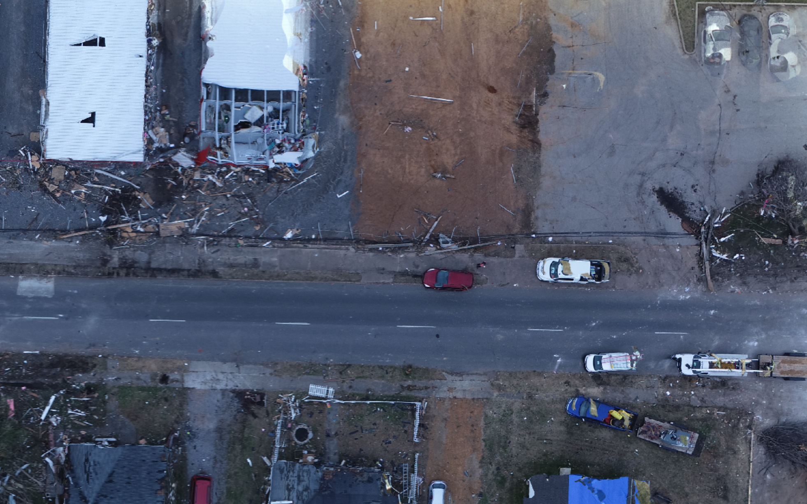

Overview
This project tackles the task of object detection in large images. In particular, we worked towards developing a workflow to detect objects in a ~ 37000 x 30000 RGBa TIFF image.
Inspirations
Professor Haan from Calvin University's Engineering Department worked with one of our team members, Aryan, last summer to better leverage the hazard assessment/survey data that is available to researchers online. They successfully developed a prototype to work with Streetview images, but there was no such workflow for drone images. Thus, we took the challenge of simplifying object detection for drone images. For this hackathon, we made cars/damaged cars our object of interest.
What it does

Our project has more of a research-oriented nature. It does the following things:
- Provide code to split large images into smaller square images, and later merge them back together.
- Trains state-of-the-art object detection models on datasets of drone images to detect cars in drone images.
- Documents the challenges and potential things that work (and do not work) in dealing with very large image files (one image can be gigabytes).
How we built it
We built it using Python and Jupyter Notebooks. We extensively used numpy to manipulate the images. We used the ultralytics library to train YOLO v8 and RT-DETR models, and used a Google Colab notebook provided by Roboflow to train Facebook's Detection Transformer and compare the models.
Accomplishments
We were successfully able to load the 1.6 GB TIFF image into a numpy array and split it into smaller equal sized chunks. We also figured out a way to merge the split images back into the original form using simple numpy array manipulation, given we have enough memory to load all the split chunks. We trained a RT-DETR model to see decent results on the very distorted dataset of split drone images.
What's Next
Figuring out how to efficiently recombine the split images with predictions back into the original size. Handle carefully the Geographic data that GeoTIFF images contain to keep the geo-referencing benefits that come with such images.
Tech Stack
- Artificial Intelligence
- ML/DL
- gdal
- DesignSafe
- Numpy
- Python
- Jupyter Notebook
- Object Detection
- rasterio
- ultralytics